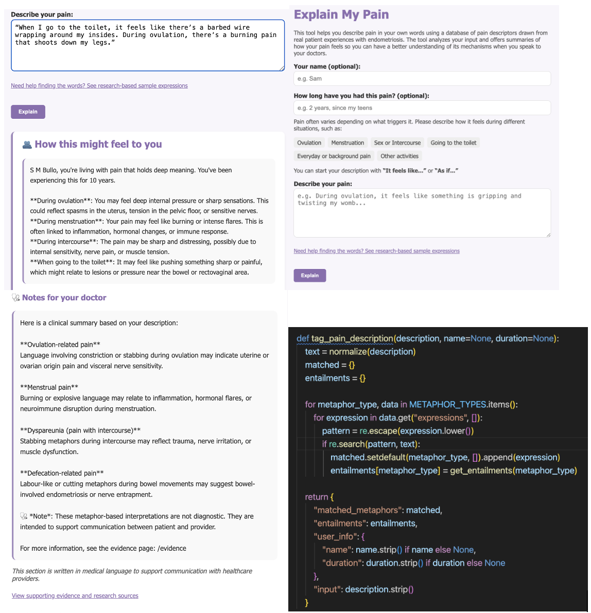
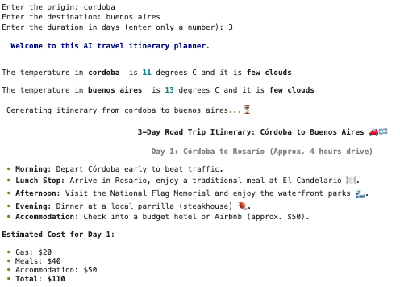
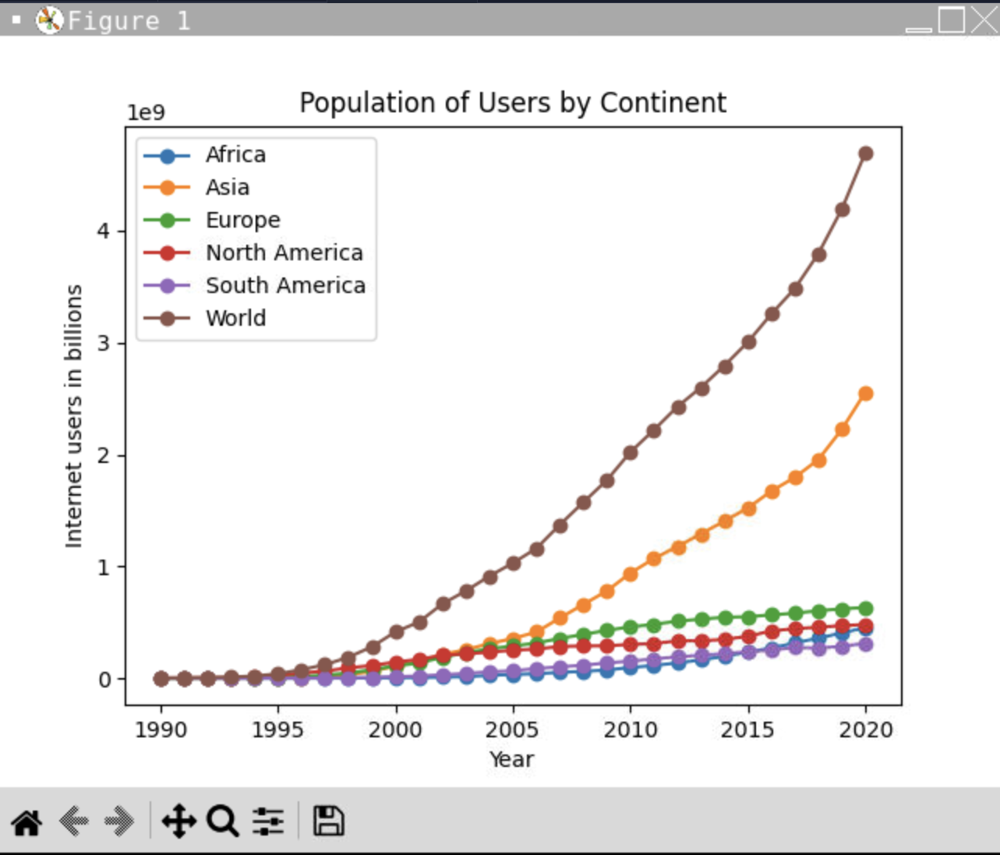
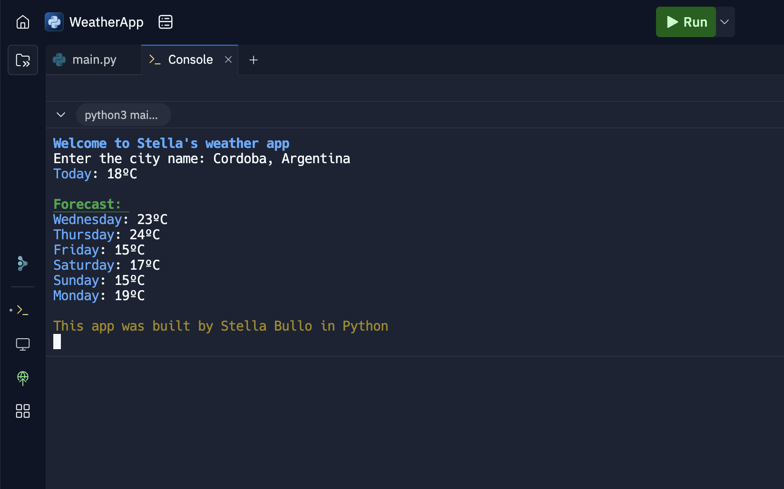

Python Projects
Explain My Pain App
Built with: Python, Flask, JavaScript, NLP, HTML, CSS
A digital tool that analyzes metaphorical pain descriptions from people with endometriosis, translating them into clinically meaningful language for patients and clinicians.
View source codeMetaphor Tagger Tool

Built with: Python, Regex, NLP, Flask
A tool designed to assist researchers by automatically tagging metaphorical expressions in pain narratives, speeding up qualitative analysis.
View source codeAI-Powered Travel Itinerary Generator
Built with: Python, Requests, OpenWeather API, Rich
Combines live weather data and AI-generated suggestions to create customized travel itineraries, displayed in a formatted terminal UI using the Rich library.
View on Google ColabCSV Data Visualization
Built with: Python, Matplotlib, CSV
Parses CSV files and creates dynamic line graphs to illustrate population growth trends over time using Matplotlib.
View Project on ReplitWeather Forecast Console App
Built with: Python, OpenWeather API, JSON
Fetches current and forecasted weather conditions via API and displays the results in the console with clear formatting and error handling.
Try it on ReplitFront-end Projects
React Dictionary App

Built with: React, Axios, Bootstrap, Dictionary API, Pexels API
An interactive dictionary app that fetches definitions, synonyms, audio pronunciation, and related images from multiple APIs. Designed with a clean, responsive UI.
Live DemoResponsive Travel Website

Built with: HTML, CSS, Bootstrap
A promotional site for Córdoba, Argentina. Includes cultural highlights, Instagram embeds, and embedded maps. Fully responsive and mobile-friendly.
Live DemoJavaScript Weather App

Built with: JavaScript, HTML, CSS, Bootstrap, Axios, OpenWeather API
A web-based weather app that allows users to search for a city and view current weather and a 5-day forecast. Includes temperature, humidity, and wind data with responsive design.
Live Demo